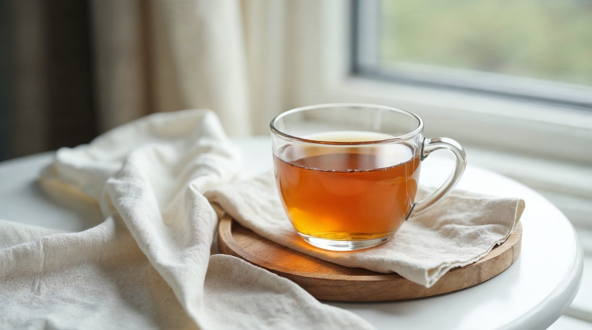
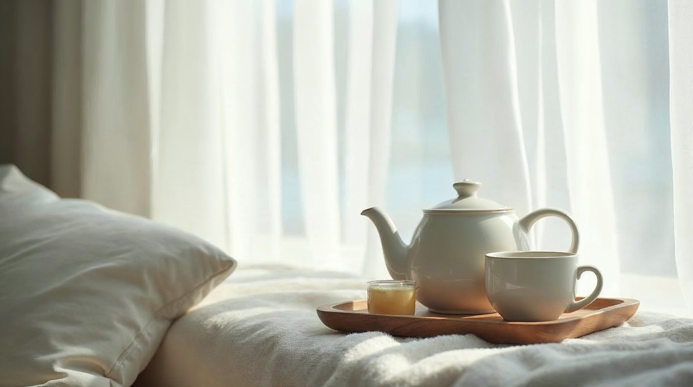
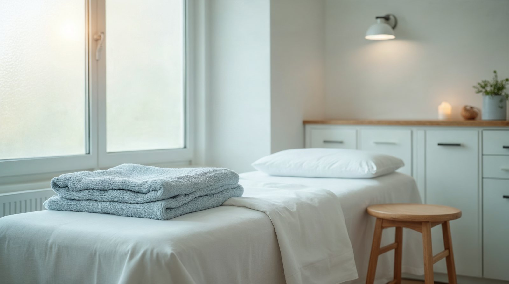
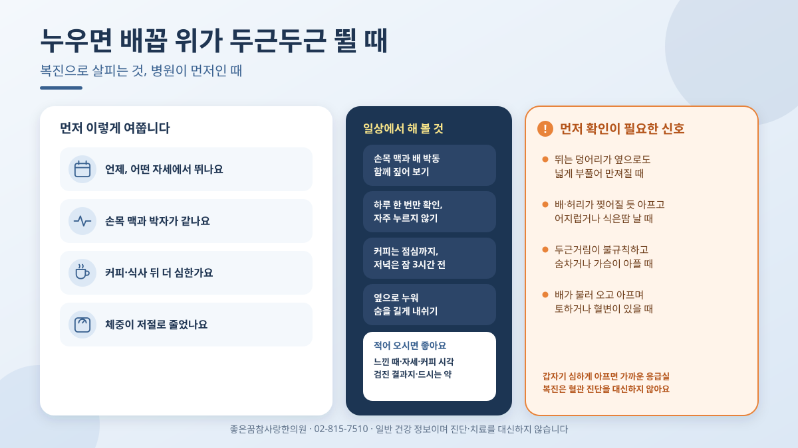

이종호 한의사 감수좋은꿈참사랑한의원 대표원장 (한의사 면허번호 19769)발행 2026-11-27 · 수정 2026-11-27
이 글의 차례
밤 열두 시가 넘어 겨우 불을 끄고 누웠어요. 바로 누워 배 위에 두 손을 포개 얹었는데, 손바닥 아래에서 무언가 쿵, 쿵, 일정하게 뛰는 게 느껴집니다. 배꼽 바로 위쪽이에요. 기분 탓인가 싶어 손을 떼었다가 다시 얹어 봐도 여전히 뜁니다. 그때부터 잠은 달아나고, 휴대폰으로 배꼽 위 맥박을 검색하다 보면 무서운 병 이름이 줄줄이 나오죠.
결국 새벽까지 배에 손을 얹었다 뗐다를 되풀이하게 됩니다.
진료실에서 이런 말씀을 자주 들어요. "원장님, 배에서 심장이 뛰는 것 같아요. 이거 괜찮은 건가요?" 대개 조심스럽게, 조금은 민망해하며 꺼내세요. 별것 아닌 걸 묻는 건 아닌지, 그렇다고 그냥 넘겨도 되는 건지 몰라 며칠, 길게는 몇 달을 혼자 신경 쓰다 오시는 분이 많거든요. 그동안 밤마다 얼마나 마음을 졸이셨을까 싶어요.
먼저 안심부터 시켜 드릴게요. 배꼽 위에서 뛰는 느낌은 많은 경우 몸속에서 가장 굵은 혈관인 대동맥이 배를 지나는 부분, 곧 배 대동맥의 박동이에요. 마른 편이거나, 바로 누워 배 근육이 풀렸을 때, 식사 뒤나 긴장해서 심장이 세게 뛸 때 손에 잘 느껴지죠. 원래 그런 거예요. 몸이 오늘도 성실하게 피를 보내고 있다는 표시이기도 하고요.
그러니까 사실은 두 가지를 나눠서 보셔야 해요. '박동이 느껴진다'는 것과 '박동이 이상하다'는 건 다른 얘기거든요. 그래서 저는 복진을 할 때 이 박동이 어디에서, 얼마나 세게, 어떤 모양으로 뛰는지를 배의 긴장과 온기와 함께 살펴요.
다만 뛰는 덩어리가 옆으로도 넓게 부풀어 만져지거나, 갑자기 배와 허리가 찢어질 듯 아프다면 얘기가 달라요. 그때는 한의원이 아니라 병원 검사가 먼저예요.
왜 배꼽 위에서 맥이 뛰는 것처럼 느껴질까요
심장에서 나온 대동맥은 가슴을 지나 배 한가운데, 척추 바로 앞을 따라 내려옵니다. 그리고 배꼽 높이쯤에서 양쪽 다리로 가는 두 갈래로 나뉩니다. 그러니 배꼽 위 한가운데를 누르면 이 굵은 혈관이 손 아래에 놓이게 됩니다. 배에 살이 적거나 배 근육이 풀린 자세라면 박동이 손에 그대로 전해지는 것이 오히려 자연스럽습니다.
살이 빠진 뒤에 처음 알아차렸다는 분, 임신 중에 느꼈다는 분이 계신 것도 그래서입니다.
같은 사람이라도 더 잘 느껴지는 때가 있습니다. 식사 뒤에는 소화를 위해 배 속으로 피가 많이 몰립니다. 커피를 여러 잔 마신 날, 긴장하거나 불안한 날, 열이 나는 날에는 심장이 빠르고 세게 뛰어 배에서도 그 박동이 크게 느껴집니다. 잠자리에 누워 주변이 조용해지면 낮에는 묻혀 있던 몸의 감각이 또렷해지기도 하고요.
한번 신경이 쓰이기 시작하면, 확인하려고 자꾸 누르는 손 때문에 배 근육이 긴장해 더 잘 느껴지는 일도 생깁니다.
한의학 고전에도 이런 느낌을 살핀 기록이 있습니다. 『상한론』에는 명치 아래가 두근거리는 모습(心下悸)과 배꼽 아래가 두근거리는 모습(臍下悸)이 따로 적혀 있고, 땀을 많이 낸 뒤처럼 몸이 지치고 흔들렸을 때의 신호로 살폈습니다.
저도 복진에서 뛰는 자리가 명치 쪽인지, 배꼽 위인지, 배꼽 아래인지를 나누어 보고, 그분의 잠과 긴장, 소화 이야기와 함께 엮어 봅니다.
배가 뛴다고 말씀하시는 느낌이 다 같은 것은 아닙니다. 손목 맥과 같은 박자로 일정하게 쿵쿵 뛴다면 혈관의 박동일 가능성이 큽니다. 박자 없이 꿀렁꿀렁 움직이고 꾸르륵 소리가 함께 난다면, 장이 음식과 가스를 밀어내는 움직임에 가깝습니다.
배 피부 바로 아래가 눈꺼풀 떨리듯 파르르 떨리다 멎는다면 근육이 잠깐씩 떨리는 것일 수 있는데, 피곤하거나 커피를 많이 마신 날, 긴장이 이어질 때 잘 생깁니다. 어느 쪽에 가까운지 말씀해 주시면 살펴볼 방향이 훨씬 또렷해집니다.
그렇다고 모든 박동이 괜찮다는 뜻은 아닙니다. 나이가 들며 대동맥 벽이 약해져 풍선처럼 부푸는 경우가 있는데, 이를 복부대동맥류라고 합니다. 대개 아무 증상이 없어서 복부 초음파 같은 검사를 하다가 우연히 알게 되는 경우가 많습니다. 65세가 넘은 남성, 담배를 오래 피웠거나 혈압이 높은 분, 가족 중에 같은 병을 앓은 분이 있다면 더 눈여겨봐야 합니다.
위아래로만 뛰는 것이 아니라 옆으로도 넓게 부풀며 뛰는 덩어리가 만져진다면, 그때는 복진으로 판단할 일이 아니라 복부 초음파로 확인할 일입니다.
이런 분들을 자주 뵙습니다
마른 체형에 커피를 하루 서너 잔 마시는 직장인분들이 이런 말씀을 많이 하십니다. 밤늦게 퇴근해 씻고 누우면 배에서 쿵쿵 뛰는 게 느껴지고, 회의가 많았거나 마감에 쫓긴 날 더 심하다고요. 이런 분께는 맥을 짚으며 오늘 하루 긴장이 어땠는지, 마지막 커피는 몇 시였는지부터 여쭙습니다.
배의 박동이 손목 맥과 같은 박자로 고르게 뛰고 배 전체가 단단하게 굳어 있다면, 저는 박동보다 배의 긴장과 잠을 먼저 살피자고 말씀드립니다.
다이어트로 몇 달 사이 체중을 꽤 줄인 분들도 놀라서 오십니다. 예전에는 몰랐는데 요즘 누우면 배꼽 위가 뛰는 게 눈으로도 보인다는 것이지요. 배를 덮고 있던 지방이 줄어 박동이 그대로 드러나는 경우가 많습니다. 다만 일부러 줄인 게 아니라 저절로 빠진 체중이라면 이야기가 달라지니, 그때는 내과 진료를 먼저 받아 보시도록 권합니다.
시험을 앞둔 수험생이나 큰 발표를 앞둔 분들은 명치 아래가 두근거리면서 속이 울렁거린다고 하십니다. 『상한론』에 적힌 명치 아래의 두근거림이 떠오르는 장면입니다. 이런 분들은 대개 숨이 가슴 위쪽에서 얕게 오가고, 배를 만져 보면 명치 주변이 딱딱하게 굳어 있습니다. 숨을 길게 내쉬는 연습과 잠드는 시각, 아침 식사를 함께 이야기합니다.
갱년기 무렵의 여성분들 가운데는 얼굴이 화끈 달아오르면서 가슴과 배가 함께 두근거린다는 분이 계십니다. 이런 분께는 열감이 오르는 시간대와 밤잠, 땀 이야기를 함께 여쭙니다. 두근거림이 잦다면 내과에서 심장 리듬과 갑상선 검사를 받아 보셨는지도 확인하고, 아직이라면 먼저 받아 보시도록 권합니다.
임신 중에 배에서 맥이 뛰는 게 느껴진다며 걱정하시는 분도 계십니다. 임신 중에는 몸 전체를 도는 피의 양이 늘어나 이런 느낌을 받는 경우가 적지 않습니다. 다만 배가 아프거나 출혈이 있거나, 평소와 다르게 태동이 줄었다고 느껴진다면 박동보다 그 변화가 먼저입니다. 그때는 다니시는 산부인과에 먼저 연락해 주세요.
꼭 따로 말씀드리는 경우도 있습니다. 예를 들어 오래 담배를 피웠고 혈압약을 드시는 아버님이 누워 계실 때 배에서 뛰는 게 보인다며 가족이 걱정스레 모시고 오는 경우입니다. 이럴 때 저는 복진으로 결론을 내리지 않습니다. 박동이 옆으로 넓게 느껴지는지 살피되, 그와 상관없이 내과에서 복부 초음파로 대동맥 굵기를 확인해 보시길 먼저 권합니다.
검사를 받고 오시면 그 결과를 바탕으로 잠과 소화, 몸의 긴장을 이어서 살핍니다.

혼자 살펴볼 때와 생활에서 해 볼 것
먼저 손목 맥과 배의 박동을 함께 짚어 보세요. 바로 누워 무릎을 세우고, 한 손은 배꼽 위에 가볍게 얹습니다. 다른 손의 두세 손가락으로는 배 위에 얹은 손의 손목 안쪽, 엄지 쪽에서 맥이 뛰는 자리를 짚습니다. 두 곳이 같은 박자로 뛴다면 그 박동은 심장 박자를 따라가는 혈관의 맥입니다.
박자가 들쭉날쭉하거나 한 번씩 건너뛰는 느낌이 잦다면, 배보다 심장 리듬을 먼저 확인할 일입니다.
기록은 일주일이면 충분합니다. 언제 느꼈는지, 그때 자세는 어땠는지, 식사와 커피는 몇 시였는지, 그날 긴장이나 걱정이 컸는지, 가슴도 같이 두근거렸는지를 한두 줄로 적어 두세요. 하루에 한 번, 같은 자세로만 확인하고 그 밖의 시간에는 일부러 눌러 보지 않는 것이 요령입니다. 자꾸 확인할수록 신경은 그쪽으로 더 쏠리고, 배는 더 긴장합니다.
생활에서는 몇 가지를 바꿔 볼 수 있습니다. 커피는 점심 무렵까지만 드시고 오후에는 따뜻한 보리차로 바꿔 보세요. 저녁은 잠들기 3시간 전쯤 마치고, 먹자마자 바로 눕지 않습니다. 잠자리에서 박동이 신경 쓰인다면 바로 눕기보다 옆으로 누워 무릎 사이에 베개를 끼워 보세요. 배 근육이 덜 긴장하고 손이 배에 얹히지 않아 한결 편하다는 분이 많습니다.
잠들기 전 몇 분은 코로 편하게 들이쉬고 조금 더 길게 내쉬는 호흡을 해 봅니다. 어지럽다면 바로 멈추세요.
복진을 받으러 오실 때는 배가 너무 부른 때는 피하시고, 배를 드러내기 편한 옷을 입으시면 좋습니다. 진료실에서는 배의 힘을 편하게 빼시도록 한 뒤, 아프지 않은 곳부터 천천히 손을 얹습니다. 간지럼을 많이 타거나 배를 보이는 것이 불편하시다면 편하게 말씀해 주세요. 그날 몸 상태에 맞춰 살피는 방법을 함께 상의합니다.
임신 가능성이나 최근 배 수술, 탈장이 있다면 미리 알려 주시고요.

얼마나 지켜보고, 언제 진료를 받을까요
손목 맥과 같은 박자로 고르게 뛰고, 아픔이나 덩어리 없이 누웠을 때만 느껴진다면 생활을 조절하며 한두 주 기록해 보셔도 괜찮습니다. 그 사이 커피와 저녁 시간을 바꿨는데도 신경이 쓰여 잠을 설치거나, 명치 답답함과 소화 불편, 불안이 함께 이어진다면 진료를 받아 보세요.
65세가 넘은 남성이거나 흡연, 고혈압, 가족력이 있다면 증상이 없더라도 다음 건강검진 때나 내과에서 복부 초음파로 대동맥을 확인할 수 있는지 상의해 보시길 권합니다.
다음과 같은 경우에는 기다리지 말고 먼저 병원 진료를 받으세요.
- 배 한가운데에서 뛰는 덩어리가 옆으로도 넓게 부풀어 만져지는 경우
- 갑자기 배나 허리, 옆구리가 찢어질 듯 아프고 어지럽거나 식은땀이 나는 경우
- 가슴 두근거림이 불규칙하고 숨이 차거나 가슴이 아프며, 쓰러질 것 같은 경우
- 배가 점점 불러 오고 아프며, 토하거나 피가 섞인 대변을 보는 경우
- 일부러 줄이지 않았는데 체중이 줄고 배에 덩어리가 만져지는 경우
배나 허리가 갑자기 심하게 아프면서 어지럽거나, 가슴 통증과 숨참이 함께 온다면 지체하지 말고 가까운 응급실로 가세요. 걱정과 불안이 커서 마음이 많이 힘들 때는 ☎ 109로 바로 전화해 이야기를 나눌 수 있습니다. 복용 중인 약은 처방한 의사와 상의 없이 줄이거나 끊지 않습니다.

좋은꿈참사랑한의원에 처음 오시면
처음 오시면 언제부터, 어떤 자세에서, 하루 중 언제 뛰는 느낌이 드는지부터 여쭙습니다. 그 무렵 체중 변화와 커피, 술, 잠, 소화, 대소변은 어떤지, 혈압이나 심장 이야기를 들은 적이 있는지, 드시는 약과 건강검진 결과도 함께 정리합니다.
그다음 맥을 짚습니다. 양쪽 손목에서 맥의 빠르기와 고르기, 힘을 살피며 오늘 몸이 얼마나 긴장해 있는지 가늠합니다. 혀를 보고, 필요하다고 판단되면 복진을 합니다. 명치와 배꼽 위, 배꼽 아래를 나누어 박동이 어디서 가장 뚜렷한지, 위아래로만 뛰는지 옆으로 퍼지는지, 배가 단단한지 말랑한지, 찬 곳과 따뜻한 곳의 차이가 있는지를 봅니다.
제가 진료실에서 쓰는 초음파는 근육과 힘줄, 인대를 살피는 용도라, 배 속 대동맥은 내과 등에서 복부 초음파로 확인받으시도록 안내합니다. 검사가 먼저 필요해 보이지 않는다면, 살핀 내용을 모아 침이나 한약 상담, 그리고 잠과 식사, 호흡에 관한 생활 이야기를 함께 정합니다.
오실 때는 일주일 동안 적은 기록과 최근 건강검진 결과지, 드시는 약 목록을 가져와 주세요. 다시 오시면 그 기록과 비교해 뛰는 느낌이 드는 때가 어떻게 달라졌는지, 잠은 어땠는지부터 이어서 여쭙습니다.
마치며
몸속에서 무언가 뛰는 게 느껴지면 누구라도 겁이 나요. 특히 밤에 혼자 누워 있을 때는 그 작은 박동이 온 신경을 붙잡죠. 그런데 그 박동의 대부분은 오늘도 쉬지 않고 피를 보내 주는 몸의 성실한 움직임이에요. 걱정해야 할 몇 가지 신호만 분명히 알아 두고, 나머지는 너무 붙들지 않으셨으면 해요.
배의 긴장과 잠을 살피는 건 제가 할게요. 대신 하나만 부탁드려요. 잠자리에서는 손을 배 위에 얹는 대신 옆으로 누워 숨을 길게 내쉬어 보세요. 확인은 하루 한 번이면 충분해요. 딴 건 하시던 대로 편하게 지내셔도 돼요.
내일은 언제 느꼈는지 한 줄만 적어 두세요. 다음에 오시면 그 한 줄과 함께 맥부터 짚어 볼게요. 궁금한 건 그냥 편하게 물어보세요.
함께 읽으면 좋은 글
- 복진은 무엇이고 한의원에서 배를 만져 보는 이유는 무엇인가요?
- 진맥을 받다가 맥이 고르지 않거나 한 번씩 쉬어 가는 것 같다는 말을 들었을 때는 무엇을 확인하나요?
- 가슴이 두근거리고 불안할 때는 어떤 점을 먼저 확인하나요?

왜 배꼽 위에서 맥이 뛰는 것처럼 느껴질까요
- 심장에서 나온 대동맥은 가슴을 지나 배 한가운데, 척추 바로 앞을 따라 내려옵니다.
- 그리고 배꼽 높이쯤에서 양쪽 다리로 가는 두 갈래로 나뉩니다.
이런 분들을 자주 뵙습니다
- 마른 체형에 커피를 하루 서너 잔 마시는 직장인분들이 이런 말씀을 많이 하십니다.
- 밤늦게 퇴근해 씻고 누우면 배에서 쿵쿵 뛰는 게 느껴지고, 회의가 많았거나 마감에…
혼자 살펴볼 때와 생활에서 해 볼 것
- 먼저 손목 맥과 배의 박동을 함께 짚어 보세요.
- 바로 누워 무릎을 세우고, 한 손은 배꼽 위에 가볍게 얹습니다.
얼마나 지켜보고, 언제 진료를 받을까요
- 배 한가운데에서 뛰는 덩어리가 옆으로도 넓게 부풀어 만져지는 경우
- 갑자기 배나 허리, 옆구리가 찢어질 듯 아프고 어지럽거나 식은땀이 나는 경우
자주 묻는 질문
배꼽 위에서 맥이 뛰는 게 느껴지면 병이 있는 건가요?
마른 편이거나 누워서 배 근육이 풀렸을 때 배 대동맥의 박동이 느껴지는 일은 흔합니다. 다만 옆으로 넓게 부푼 덩어리처럼 만져지거나 나이, 흡연, 고혈압 같은 요인이 있다면 복부 초음파로 확인을 받아 보세요.
한의원 복진으로 복부대동맥류를 알 수 있나요?
복진은 혈관이나 내장의 병을 진단하는 방법이 아닙니다. 의심되는 모습이 있거나 위험 요인이 있으면 내과 등에서 복부 초음파 검사를 먼저 받으시도록 안내합니다.
커피를 마신 날 더 심하게 느껴지는 건 왜 그런가요?
카페인은 심장을 빠르고 세게 뛰게 할 수 있어 배에서도 박동이 크게 느껴질 수 있습니다. 오후에는 줄여 보고 그날그날 기록해 비교해 보세요.
복진을 받으러 갈 때 무엇을 준비하면 되나요?
배가 너무 부른 때는 피하시고, 배를 드러내기 편한 옷으로 오시면 좋습니다. 임신 가능성이나 최근 배 수술, 탈장이 있다면 미리 알려 주세요.
자꾸 손으로 눌러 확인하게 되는데 괜찮을까요?
자주 누를수록 신경이 쏠리고 배가 긴장해 더 잘 느껴지기 쉽습니다. 하루 한 번 같은 자세로만 확인해 기록해 오시면 진료 때 함께 봅니다.
좋은꿈참사랑한의원은 재진 때 지난번 이야기부터 이어서 여쭙니다. 진료시간과 예약은 오시는 길에서 확인하세요.
어디서 상담받을 수 있나요?
좋은꿈참사랑한의원은 서울 동작구 만양로2길 2 신성빌딩 3층·5층(서울 동작구 상도동, 7호선 상도역 3번 출구 근처)에 있습니다. 한의사 3명(이종호 대표원장, 조영기 수석진료원장, 정원영 진료원장)이 진료합니다. 진료시간은 평일 09:30~20:00(점심 13:00~14:00), 토·일·공휴일 09:30~15:00이며, 방문 전 전화로 확인을 권합니다. 예약은 네이버 예약, 카카오톡 상담, 전화 02-815-7510로 받습니다.
이 글은 일반적인 건강 정보이며 개인의 진단이나 치료를 대신하지 않습니다. 증상이 있거나 복용 중인 약이 있다면 진료를 통해 확인하세요. 치료 효과는 개인마다 다를 수 있습니다.
작성 기준: 일반적으로 알려져 있는 건강 정보를 참고해 정리했습니다(대표원장 감수). 증상 기록은 1~2주 동안 하루 1회, 비슷한 시간에 적어 오시면 지난 상태와 비교하기 쉽습니다.